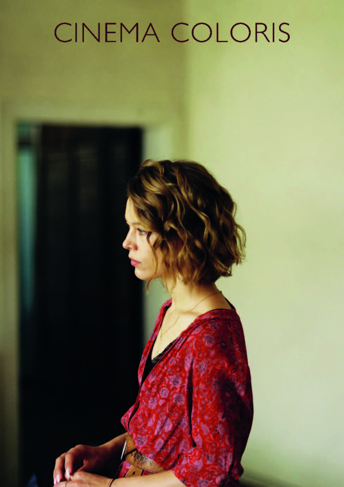

Dos amigos, Leon y Felix, van a una casa en mitad de la naturaleza para desconectar de la ciudad y sacar la inspiración necesaria para sus respectivos proyectos artísticos. Ya en la casa se encuentran con Nadja, una enigmática chica.
De forma reiterada se juega con la altura y la diferencia de nivel. Es un elemento visual y narrativo empleado para mostrar la relación de Leon con los otros personajes, o más bien, su autopercepción frente al mundo que le rodea. Además de ser una forma de representar la disociación del protagonista con el mundo y las personas de su entorno, accentúa su inmobilismo. Más allá de terminar siendo ignorado por su círculo, esto no es más que la consecuencia de sus actos. Podemos ver ejemplos claros como cuando se nos vuelve a presentar al personaje de Devid, sentado en su alta silla, a la cual sube Felix mientras él permanece totalmente acostado. También, permaneciendo sentado e inherte ante cualquier cambio o iniciativa que se frague a su alrededor.
Las escenas relativas a la reparación del tejado de la casa representan la evolución de Felix como personaje, tanto su desunión con Leon como su acercamiento hacia Devid, completando de cierta forma su arco evolutivo. Cabe sobretodo fijarse en dos planos, dos imágenes concretas que funcionan a modo de espejo. El primero, en el que se muestra como saca del garaje la escalera para subir al tejado, y el segundo, cuando tras estar completada la reparación la escalera es devuelta a su lugar. En el primero, coge la escalera en posición horizontal desde un extremo, dejando caer el otro extremo en el suelo mientras pide ayuda a Leon. En el segundo, pese a ubicarse Felix en la misma posición, ahora la escalera va recta y sin tocar el suelo gracias a Devid, quien la toma del otro extremo.
Un elemento sonoro y visual repetido a lo largo del film es la presencia constante de los aviones que luchan contra el incendio. Funcionan como un refuerzo dramático, parecen reafirmar al personaje en su tormento personal. Al mismo tiempo evidencia el aislamiento, es una clara señal de peligro ignorada reiteradamente. Esta historia habla acerca de las inseguridades y los complejos, el incendio y el papel que cumple a lo largo del film no deja de ser una metáfora de la burbuja individualista en la que se ha refugiado el protagonista de esta película. El incendio es el gran elefante en la habitación.
Hacia el final de la película se genera un momento de clímax que muestra la repentina evolución forzada en el personaje protagonista, donde se desvanece la burbuja donde se ha acomodado para tratar de ignorar a todo el entorno que le rodea. Estando en la playa y tras ser amonestado y abandonado por Nadja por su actitud egocéntrica, de repente mira hacia el interior y él ve el fuego. Siente la necesidad de taparse el rostro, parece que siente por primera vez un impulso llegado desde el exterior, no como cuando su amigo le tuvo que tapar en la playa para que no se quemara su piel bajo el sol. Su historia se asemeja a la de aquel hombre que escapó de la caverna tal como relató Platón. Fruto del subjetivismo del protagonista, el espectador se ve inmerso en acciones o imágenes creadas o exageradas por la ociosa mirada del escritor, generando así un diálogo entre lo real e irreal. El desenlace, narrado enteramente a través de la pluma de Leon, no da espacio para discernir las imágenes reales de las puramente poéticas, los recuerdos de las reinterpretaciones, por fin su vida se convierte así en su relato.